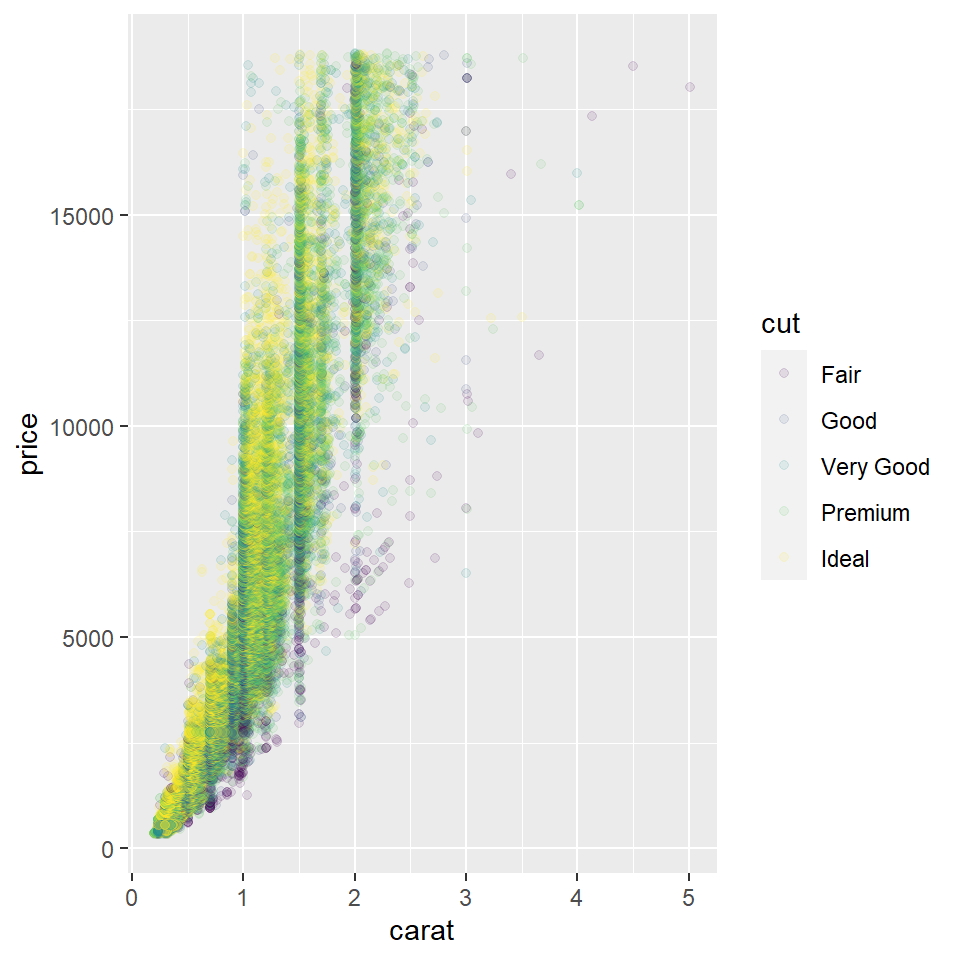

Instructions
Delete all of this and paste in your own content right here!!
Portfolio File Format
To create a new Portfolio entry, make sure that you selected R Markdown (.Rmd) as the format option of the post when using the New Post blogdown addin.
Setup chunk
Make sure you edit the setup chunk above and bring in all packages you need using r library(package_name).
Inserting a Custom image in your Post
The easiest option is to use the blogdown Insert Image RStudio addin to add an external image.
Another way: use a code chunk, if you already have the image downloaded and ready. Place the image in the same folder as this Post, and link to it with the chunk below:

Narrative Text and Futher Code chunks
Start typing/pasting text here.
Diamonds are forever. We can see that from this graph below:
